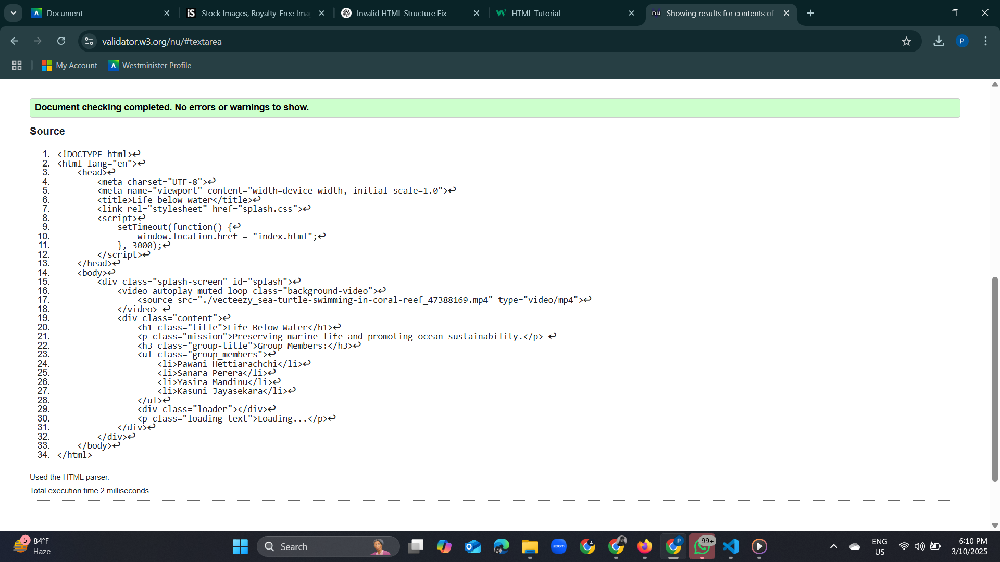
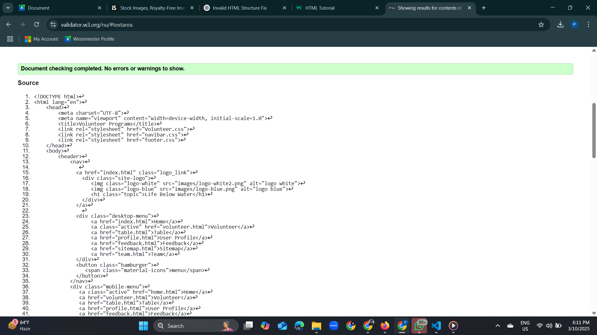
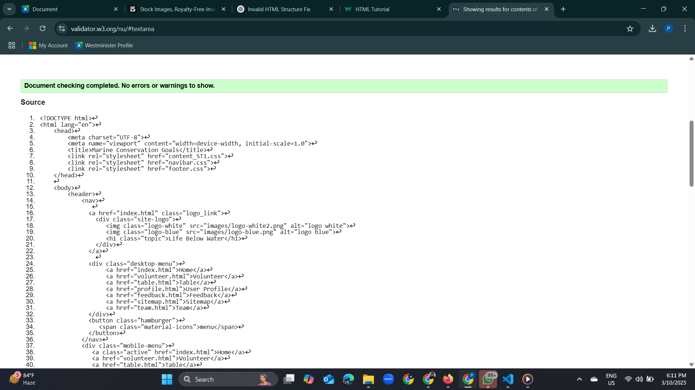

Splash Page validation report
This is the code of splash page, its make more eye contactive by background video and our team members are displayed
Back to Page Editor page
Volunteer Page validation report
The volunteer page represent the programs that can be apply to people
Back to Page Editor page
Content Page validation report
The content page marine conservation and goals
